MAGE / 魔法火力 / 範囲攻撃
メイジ
単体・範囲の魔法攻撃で火力を出す系統。防御は低めなので、距離を保ち、味方の前衛や敵への行動妨害を活用します。
育成の方向
INTを中心にMENを検討。武器装備にはPOWの条件も確認。
公式職業紹介のステータス案を要約しています。固定の振り方ではなく、装備条件と遊び方に合わせて検討してください。
公式の職業紹介 ↗転職ルート
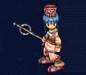
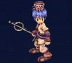


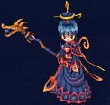
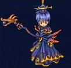
画像出典：公式職業紹介。各段階の2種類の外見を掲載しています。
場所名はゲーム内で探しやすい英語表記です。
全掲載スキル一覧 20件
公式Lexiconの早見表に載っている全項目を収録。効果は日本語の要約です。
右欄は「スキルLv：必要キャラクターLv」。公式表の空欄は省略しています。MP・持続時間・再使用時間は全件が公開されていないため、記載のある情報のみを要約しています。ゲーム内の最新表示を優先してください。
| スキル | 効果・消費アイテム | 各スキルLvの習得条件 |
|---|---|---|
Mind Buster | 敵1体への攻撃魔法。 | Lv1: 16 |
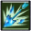 Magic Ice | 敵1体を攻撃し、移動速度を13秒間低下。 | Lv1: 16 / Lv2: 36 / Lv3: 56 / Lv4: 76 / Lv5: 96 / Lv6: 116 / Lv7: 136 |
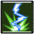 Magic Thunder | 敵1体に雷の攻撃。 | Lv1: 21 / Lv2: 41 / Lv3: 61 |
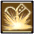 Clear Magic | 対象1体の魔法系弱体効果を解除。 | Lv1: 26 / Lv2: 46 |
Magic Shield | 自身への被ダメージを50%軽減。回数は2＋スキルレベル、持続は3分。 | Lv1: 31 / Lv2: 51 / Lv3: 71 / Lv4: 91 / Lv5: 111 / Lv6: 131 |
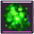 Magic Poison | 初撃と15秒間の継続ダメージ。 | Lv1: 36 / Lv2: 61 / Lv3: 86 / Lv4: 111 / Lv5: 136 |
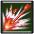 Magic Fire | 敵1体への炎の攻撃。光線の数はスキルレベルに応じる。 | Lv1: 46 / Lv2: 71 / Lv3: 96 / Lv4: 121 / Lv5: 146 |
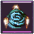 Concentration | 自身のスキルクリティカルを1分間2倍にする。Concentration Tonicが必要。 | Lv1: 51 |
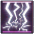 Lightning | 指定地点の広い範囲へ雷の攻撃。クリティカルは発生しない。 | Lv1: 56 / Lv2: 81 / Lv3: 106 / Lv4: 131 |
Arrest | 対象の移動を20秒間封じる。Unarrestで早期解除できる。 | Lv1: 61 / Lv2: 101 / Lv3: 161 |
Frost | 周囲の敵へ攻撃し、8秒間大きく減速させる。クリティカル可能。 | Lv1: 66 / Lv2: 91 / Lv3: 116 / Lv4: 141 |
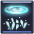 Icicle | 指定地点へ氷柱の範囲攻撃と8秒間の継続ダメージ。クリティカルなし。 | Lv1: 76 / Lv2: 101 / Lv3: 126 |
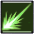 Magic Beam | 敵1体を攻撃し、3秒間スタン。 | Lv1: 86 / Lv2: 106 / Lv3: 126 / Lv4: 146 |
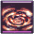 Volcano | 周囲へ大きな範囲ダメージ。クリティカル可能。 | Lv1: 96 / Lv2: 121 / Lv3: 146 |
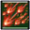 Magic Flame | 敵1体への大きな初撃と12秒間の継続ダメージ。 | Lv1: 106 / Lv2: 131 |
Ice Ball | 敵1体を攻撃し、移動速度を13秒間低下。 | Lv1: 116 / Lv2: 131 / Lv3: 146 |
Fire Ball | 敵1体へ大きなダメージ。低確率で1秒間スタン。 | Lv1: 126 / Lv2: 151 |
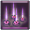 Tornado | 周囲への範囲攻撃。Overheatedで次のVolcanoを25%強化。 | Lv1: 136 |
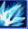 Blizzard | 周囲への範囲攻撃。Supercellで次のTornadoを25%強化。 | Lv1: 146 |
Freeze Splaher | 公式早見表には名称のみ掲載。習得レベル・効果・現在の実装状況は未確認。 | 習得条件未記載 |
Freeze Splaherは公式早見表の綴りをそのまま掲載しています。習得レベル・効果が空欄で、現行スキルとしての利用可否は未確認です。
職業別の転職手順
Lv16：最初の職業へ
- Arcarinas Square（Brynhilld）でReinmothに話しかけ、Apply for class changeを受けます。
- 移動先で装備を外し、BetranのBecome a Magicianを選びます。
- 受け取った装備とスキルブックを確認します。初期職業名は上の画像付きルートを参照してください。
Lv66：職業ごとの指定装備
購入する町：Essene。Weapon MerchantとArmor Merchantで、次の指定品を各1個購入してください。
武器：Dream Staff
防具：Armor of Tree
商人から買った装備を各1個用意します。ドロップ装備では代用できません。共通で赤のDemon Blood・青のDemon Blood・黄のDemon Bloodも各1個必要です。
Lv96：「Name of Legendary Hero」の回答
Karlstad。その後の職業別クエストと共通納品を進めます。
公式表の訪問順
Reilath → Betran → Essene Alchemist → Betran
- 転職案内NPCから手紙を受け取り、ギルドマスターへ届ける。
- 英雄名はKarlstadと回答し、続く職業別クエストを進める。
- Xen Stone ×1、Yellow Watermelon ×5、Caricsobana ×2、50,000 Kronを納品する。
- Yes, I swear an oathを選択して転職。準備が足りない場合は納品条件をゲーム内で確認する。
訪問先の順序は公式表を要約。各NPCの会話選択肢や追加条件が表にない場合は、進行中クエストの表示に従ってください。
Lv16〜131の転職手順 →公式の転職ガイド ↗Lv131：最上位職へ
案内NPC → ギルドマスター（Magicans Convene（公式職業紹介）／Mordine（転職ガイドの表））→ Saint → ギルドマスターの順に進行します。
- 転職クエストを受けてから、Amaranth Wyrm / Fiersavier / Cow Legend / The Clockのボスインスタンスを攻略。
- Rodney Garters、Tiger Dogma、Naviondark、Artpolyのクエスト品を集め、ギルドマスターへ納品。
- 次のクエストを受け、Eaglerentin PlainのMemorial ChapelでSaintと会話。Fire・Water・Poisonの試練を順に達成。
- 試練終了後は帰還前にSaintへ再度話しかける。その後ギルドマスターに戻り、転職を完了。
Lv131の担当NPCは公式資料間で不一致があります。職業紹介はMagicans Convene、転職ガイドのNPC表はMordineと記載しています。ここでは断定せず、転職クエストを受けた際の案内を優先してください。
公式Lexicon：転職の手順・NPC表 ↗